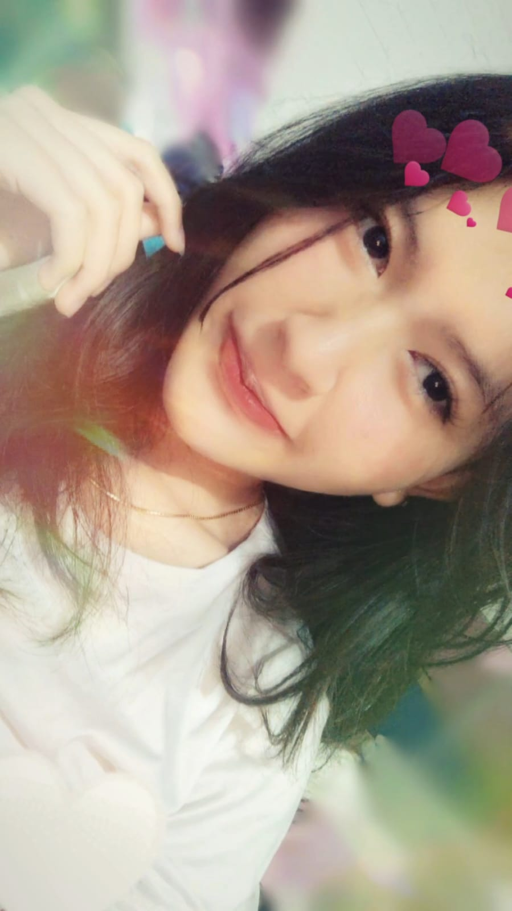
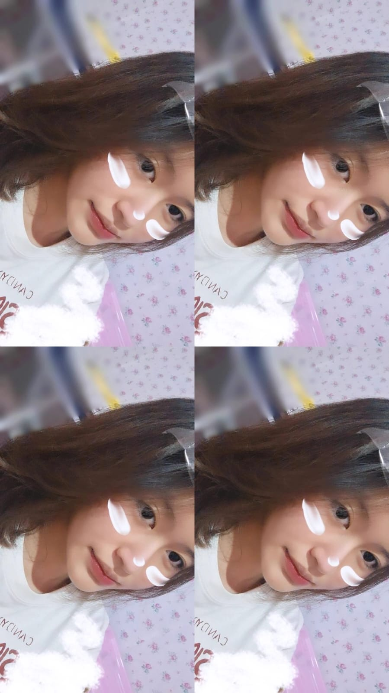
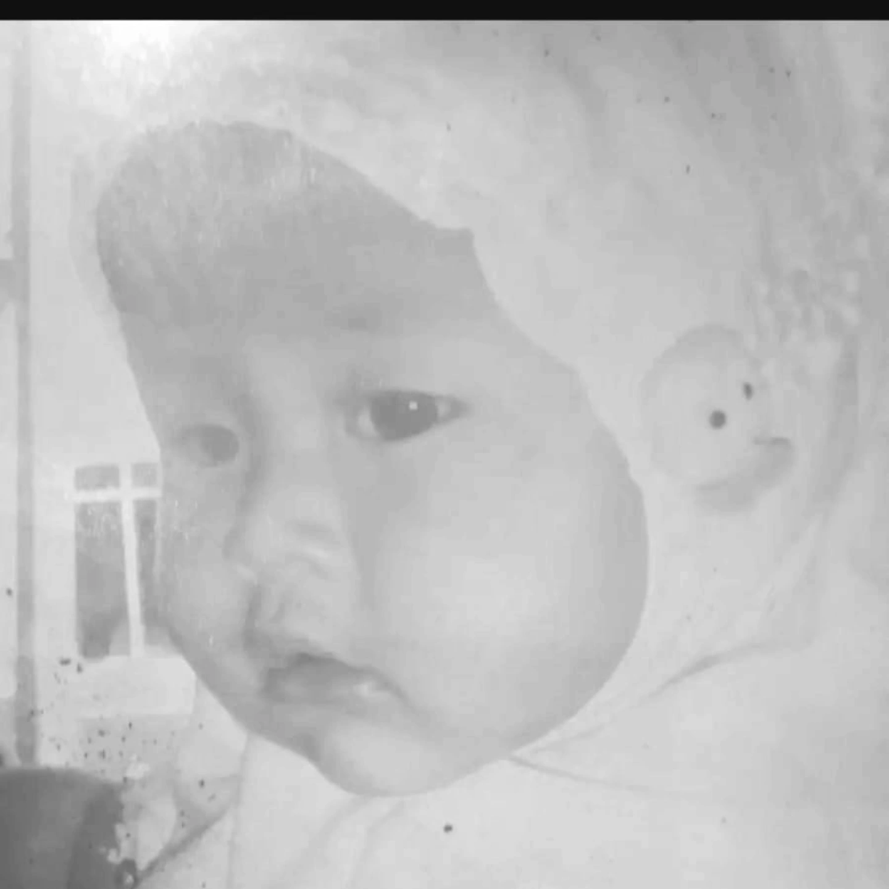
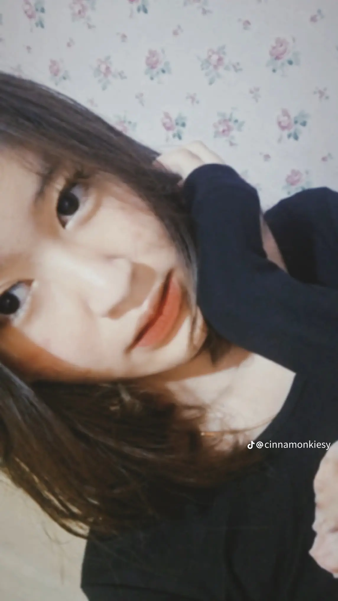

Untuk Rissa ❤️
Rissa...
Aku membuat halaman kecil ini bukan sekadar untuk membuat sesuatu yang indah, tapi karena ada sesuatu yang benar-benar ingin aku sampaikan dari hati.
Aku minta maaf.
Aku sadar kalau selama ini aku terkadang terlalu egois. Aku terlalu memikirkan apa yang aku mau dan apa yang aku rasakan, sampai mungkin aku lupa untuk melihat semuanya dari sisi kamu.
Maaf kalau keegoisanku pernah membuat kamu merasa tidak didengar, tidak dimengerti, tidak dihargai, atau bahkan membuat kamu terluka.
Aku tidak ingin mencari alasan untuk membenarkan sikapku. Kalau memang aku salah, aku ingin mengakuinya.
Aku sadar bahwa aku masih jauh dari sempurna. Masih banyak hal dalam diriku yang harus aku perbaiki.
Aku ingin belajar menjadi Daffa yang lebih dewasa, lebih sabar, lebih mau mendengarkan, dan lebih bisa memahami perasaanmu.
Aku tidak bisa mengubah apa yang sudah terjadi. Tapi aku bisa berusaha supaya kesalahan yang sama tidak terus aku ulangi.
Terima kasih untuk semua waktu yang pernah kamu berikan. Terima kasih untuk semua cerita, tawa, perhatian, dan kenangan yang pernah kita lewati bersama.
Aku membuat halaman ini bukan untuk memaksamu melakukan sesuatu dan bukan juga untuk meminta kamu langsung melupakan semuanya.
Aku hanya ingin kamu tahu bahwa aku benar-benar menyesal dan aku sadar bahwa sikap egoisku bukan sesuatu yang seharusnya aku pertahankan.
Maaf ya, Rissa. ❤️
Kalau masih ada kesempatan, aku ingin menggunakan kesempatan itu untuk menjadi seseorang yang lebih baik.
Kenangan Kita 📸



